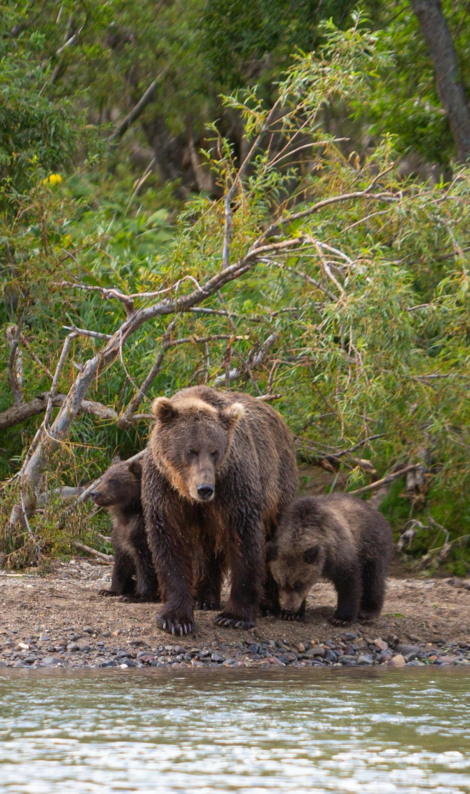
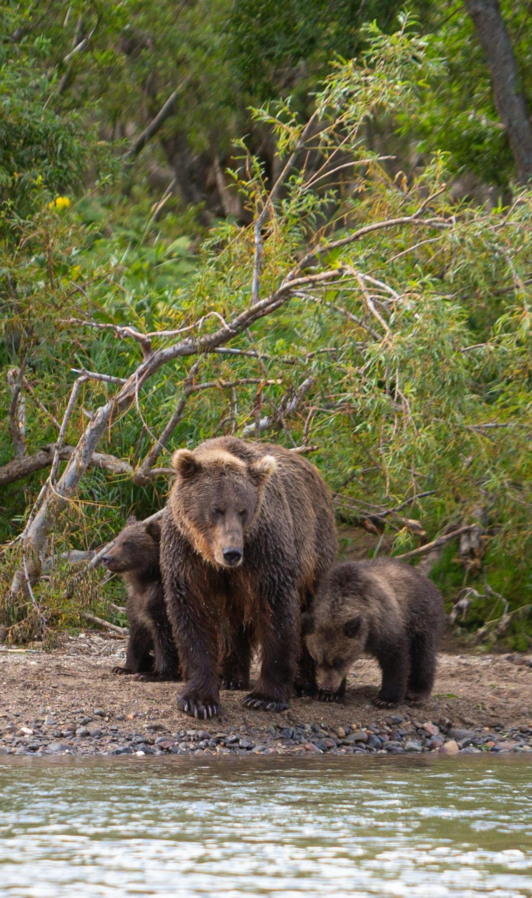
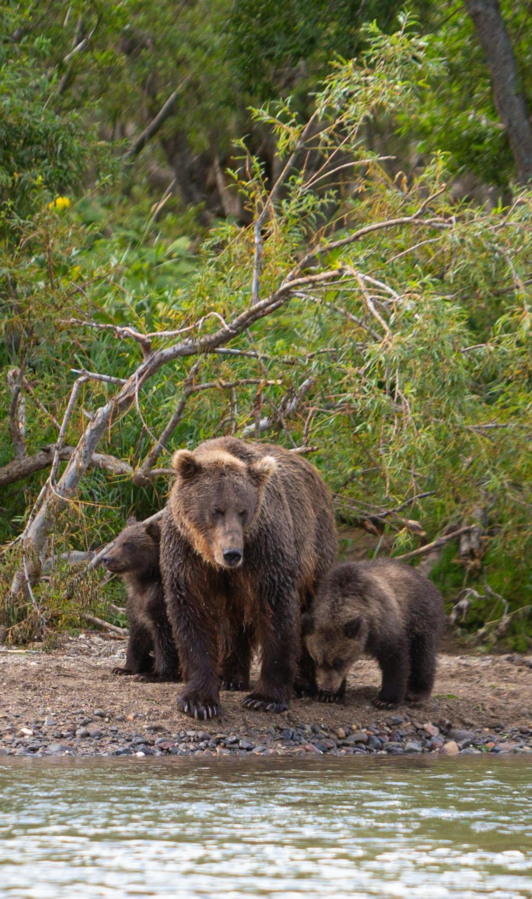

Canadian Wildlife
Explore the Canadian Rockies where you can see wolves, elk, grizzly bears and moose in their natural habitats.
Visit Churchill where in the autumn you can see polar bears along the shores of Hudson Bay.
Read More 

Immerse yourself in the Canadian Wilderness, a pristine expanse where towering mountains meet endless forests. Breathe in the pine-scented air, as the majestic landscape unfolds in a tapestry of verdant hues and rugged beauty—nature’s masterpiece at its finest.
Explore the Canadian Rockies where you can see wolves, elk, grizzly bears and moose in their natural habitats.
Visit Churchill where in the autumn you can see polar bears along the shores of Hudson Bay.
Read More

Banff National Park, Canada’s first national park, is a sanctuary of rugged peaks, glacial lakes, and vast forests. Established in 1885, it spans 6,641 square kilometers of breathtaking landscapes, offering sanctuary to diverse wildlife and endless adventure